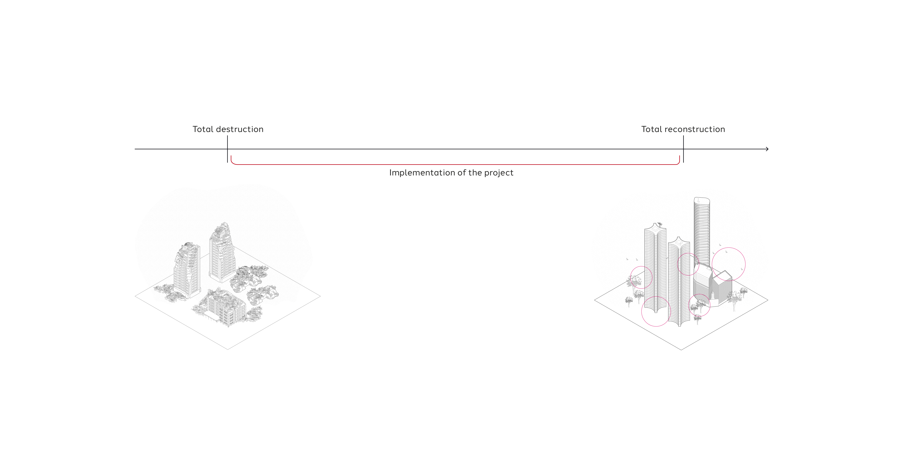
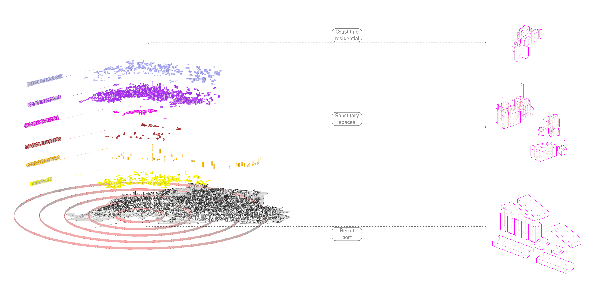
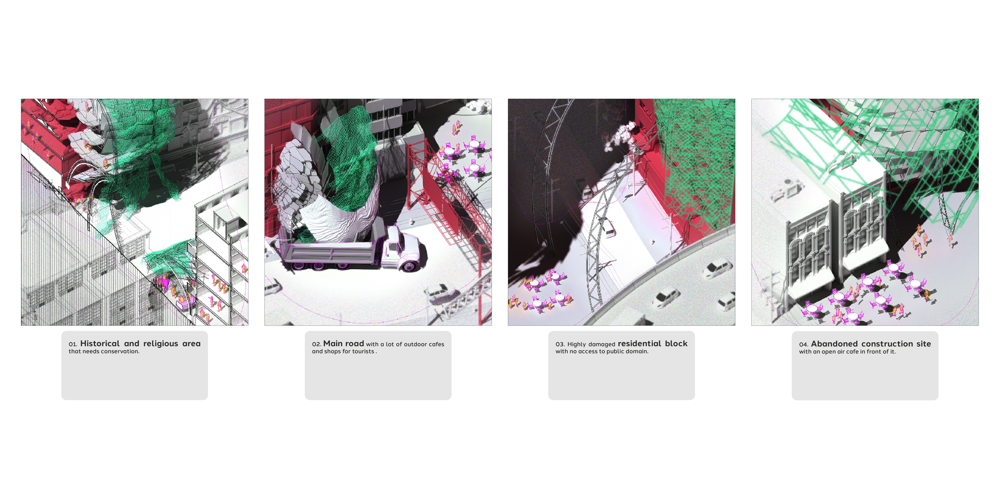

The project deals with dust pollution in areas of ecological recovery from destruction by purifying them and reusing detoxicated dust for construction. It creates new monumentality for a nation that thrives to rebuild itself from post-destruction trauma. Re-Live is a time based project that implies three stages evolving one into another. Protection, removal, and detoxication of hazardous PMs allows citizens to return to the affected by explosions areas. Its a safe and clean layer in-between damaged old fabrics. The design character of a steel framework accommodates the need for continuous electricity circuit to provide ionisation of the dust particles. It brings the feeling of post-event monumentality by repurposing distracted urban fabrics scrap and creating NEW OUT OF DAMAGED OLD. In future, people will use the infrastructure to help them reconstruct their homes, dismantle it and use steel elements for other purposes.
LV 2023